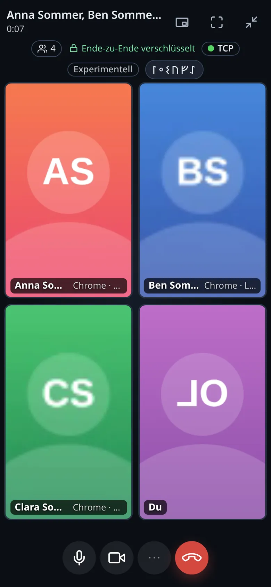
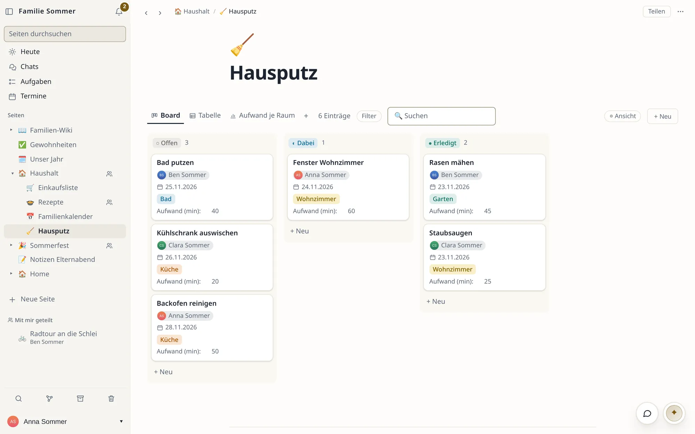
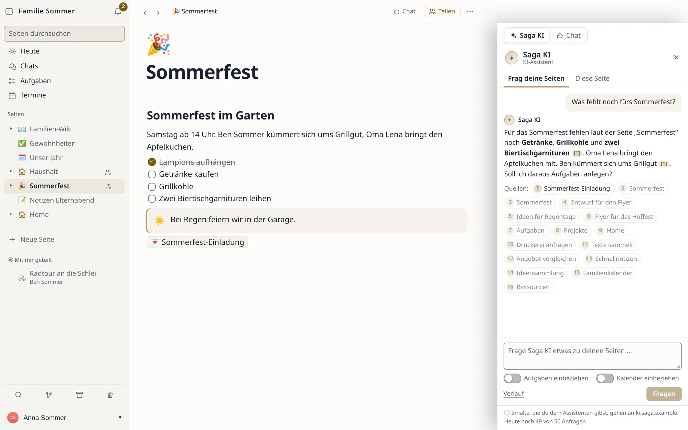

Напиши свою сагу.
Твой собственный сервер для страниц, чата и звонков
Saga переносит страницы, базы данных, чат, звонки, календари и задачи на твой собственный сервер – для семьи, клуба или команды, с приложениями для телефона и компьютера.
- Один домен, только порт 443
- Docker Compose
- Чаты и звонки со сквозным шифрованием
Бета: подходит для повседневного использования, но ещё молодая – регулярно делай резервные копии; некоторые функции явно экспериментальные. Saga остаётся бетой до версии 3.0 – после этого только стабильность.

- Страницы
- Базы данных
- Чаты со сквозным шифрованием
- Групповые звонки
- Федерация
- Совместный редактор
- Виджеты
- ИИ-ассистент
- Календари
- Зашифрованные копии
- Web · iPhone · iPad · Android · Mac · Linux
- AGPL-3.0
Новое в Saga 2.5
Самая большая глава на сегодня.
Звонки теперь идут через встроенный узел, в редакторе можно работать вместе в реальном времени, а чаты умеют гораздо больше. Плюс подстраницы, печати, обложки и виджеты для твоих страниц.
Пишем вместе в реальном времени
Новый редактор по умолчанию (Tiptap) сразу показывает, что печатают другие, и их курсоры – как только администратор включит совместное редактирование, даже с людьми на подключённых серверах.
- Упоминания людей, дат и напоминаний через @
- Синхронизированные блоки: одно содержимое в нескольких местах
- Таблицы, код, формулы, Mermaid, колонки и медиа прямо в тексте
Подстраницы на странице
Подстраницы видны прямо на родительской странице – списком или галереей с обложками.
Печати как значки
36 печатей Saga в трёх цветах рядом с эмодзи – для страниц, баз данных и строк.
Галерея обложек
100 изображений эльфийки Saga в восьми группах и случайная обложка для новых страниц.
Виджеты и диаграммы
Обновлённые виджеты – обратный отсчёт, прогресс, показатель, привычки, погода – и диаграммы из баз данных.
Лёгкий переезд
Импорт из Notion, Trilium, Markdown/Obsidian и CSV, экспорт в CSV и Markdown.
Приложение для Mac
Настольное приложение для Mac показывает веб-интерфейс твоего сервера – с уведомлениями, виджетами и туннелем для звонков.
Все изменения (на немецком) Обновление с 2.3/2.4 (на английском)
Чаты и звонки
Говори – никто не подслушает.
Чаты и звонки защищены сквозным шифрованием: сервер хранит сообщения, но прочитать их не может – как и администратор.
Звонки через GjallarhornПо умолчанию с 2.6
В Saga есть собственный медиаузел. Он работает за любым обратным прокси с поддержкой WebSocket, через обычный адрес Saga – без второго имени и без дополнительного порта.
- Один на один и в группе – с видео, звуком и показом экрана; через встроенный узел до 16 устройств с видео или 50 только со звуком, через подключённый узел с UDP до 25 с видео
- Из разговора один на один – в групповой звонок, не прерывая беседу
- Добавляй людей, даже не из этого чата; кто не ответил, виден в списке «Не в звонке» с кнопкой «Позвонить снова»
- Меняй и добавляй устройства: перенеси звонок с телефона на ноутбук или подключи ноутбук только для показа экрана
- Сквозное шифрование – в том числе через узел
С версии 2.6 Gjallarhorn включён по умолчанию – звонки вдвоём тоже идут через узел, и устройства не видят IP-адреса друг друга. Safari и браузеры на iPhone/iPad пока звонят напрямую или через TURN; приложения и приложение для Mac используют туннель через адрес Saga.


Чаты, которые умеют больше
Современные чаты (уровень 3) теперь включены по умолчанию: по-прежнему со сквозным шифрованием и со всем, что нужно каждый день.
- Реакции, ответы и редактирование, форматирование и @упоминания
- Голосовые сообщения до 15 минут
- Закрепление сообщений и чатов, отключение звука на время, отметка «непрочитано»
- Группы с администраторами, фото и описанием, контакты и жалобы администраторам


Федерация
Много серверов. Одна сага.
Подключи свой сервер к серверам Saga семьи, клуба или друзей. Делитесь страницами, общайтесь и созванивайтесь между серверами – содержимое остаётся у владельца, а каждый запрос между серверами подписан.
- Общие страницы
- Совместная правка
- Чаты
- Звонки
- Адресная книга
- Подпись Ed25519
Возможности
Всё, что хочется сохранить. В одном месте.
Без облака и без подписки: у каждого своё личное пространство, и каждый делится тем, чем хочет.
Сегодня
Стартовая страница встречает тем, что впереди: задачи к сроку, события, недавно открытые страницы и плитки твоих сервисов – с учётом твоих групп.

Страницы
Блоки, подстраницы, шаблоны, версии, комментарии и экспорт в Markdown – с быстрым поиском и деревом страниц.
Базы данных
Таблица, доска, список, галерея, календарь, временная шкала и диаграмма – с формулами, сводками, связями и фильтрами.
Календари и задачи
Календари CalDAV (например, Nextcloud, Radicale) и задачи из баз данных – с приоритетом и повторением.
ИИ-ассистент
По желанию, с OpenAI-совместимым сервисом на твой выбор: ищет ответы в твоих страницах, называет источники и помогает писать.
Федерация
Серверы Saga соединяются друг с другом: можно делиться страницами и редактировать их между серверами, переписываться и звонить.
Доступ и публикация
Делись с людьми и группами (чтение, комментарии, правка) или публикуй страницы, которые можно читать без учётной записи.
Копии и Nextcloud
Ежедневные зашифрованные резервные копии в S3, в папку или в Nextcloud – и файлы Nextcloud прямо на страницах.
LDAP и SSO
Локальные учётные записи, LDAP/Active Directory и OpenID Connect – доступ к сервисам через группы.
Пять языков
Интерфейс и приложения на немецком, английском, испанском, русском и тайском – язык выбирается для каждой учётной записи.






На снимках – немецкий интерфейс демонстрационного сервера.
Приложения
Как дома на любом устройстве.
Saga работает в любом современном браузере, в том числе на телефоне. А ещё есть приложения, в которые можно войти по QR-коду.

iPhone & iPad
Нативное приложение с виджетами. В App Store его пока нет – собери сам.
Android
Нативное приложение в виде APK из релизов на GitHub, Android 8 или новее.
Mac
Настольное приложение – оболочка для веб-интерфейса, подписанное и заверенное Apple (macOS 26 или новее).
Linux
Приложение для GNOME в виде RPM (Fedora, RHEL 10) и Flatpak для любого дистрибутива.
Готово за несколько минут
Твой сервер. Твои правила.
Saga работает в Docker Compose. Снаружи нужны только один домен и порт 443 на твоём обратном прокси – звонки идут тем же путём.
# скачать и настроить git clone https://github.com/yggdrasil-sh/saga.git && cd saga cp .env.example .env # в .env: BASE_URL, SECRET_KEY, POSTGRES_PASSWORD docker compose pull && docker compose up -d # первый пароль администратора docker compose logs saga | grep Admin-Konto # обновить позже (Saga сначала делает резервную копию) docker compose pull && docker compose up -d

- ЗапускСкачай образ и запусти – Saga слушает порт 8080, панель администратора – 8081 (только локально).
- Прокси перед SagaОдин домен с HTTPS на порту 443 указывает на Saga. В Nginx Proxy Manager включи «Websockets Support»; Caddy и Traefik делают это сами.
- НастройкаСоздай в панели администратора учётные записи, группы и сервисы, по желанию LDAP или SSO. В разделе «Звонки» кнопка «Проверить сейчас» проверяет путь через прокси.
- Подключи приложенияВойди по QR-коду из раздела «Приложения и устройства» – готово.
- ОбновленияДо версии 3.0 есть один канал: каждое обновление берёт последнее состояние
main– это бета. Только релизы? УкажиSAGA_VERSION=2.5в .env до следующего обновления.
Безопасность и приватность
Твои данные остаются у тебя
Saga работает на твоём сервере. Никакого отслеживания и телеметрии – Saga обращается только к сервисам, которые ты сам настроил (и, если хочешь, к GitHub, чтобы проверить обновления).
Сквозное шифрование
Чаты и звонки зашифрованы сквозным шифрованием – и между подключёнными серверами, и через узел.
Надёжный вход
Ключи доступа и приложения-аутентификаторы, обязательная 2FA для администраторов или для всех. Неудачные попытки замедляются, учётные записи не блокируются.
Резервные копии по плану
Ежедневно, с шифрованием age, хранение 7/4/6, пробное восстановление – плюс копия перед каждым обновлением и личные копии для каждого.
Отдельная панель администратора
Свой порт, по умолчанию доступна только локально – со своим входом и диагностикой.
Решаешь ты
Федерацию, чат, звонки и адресную книгу можно отключить для каждого подключённого сервера; отметки о прочтении и статус «в сети» – для каждого человека.
Открытый код
AGPL-3.0, всё на GitHub – сервер, приложения и инструменты, которыми сделаны эти снимки.
Планы
Путь к Saga 3.0
До версии 3.0 появятся все крупные части – после этого всё внимание стабильности. Таков план; детали ещё могут измениться.
Saga 2.6 · ИИ, который помогает
ИИ предлагает идеи, берёт на себя поручения после твоего «ОК» и сообщает о результате – всё можно отменить. А ещё собственный статус, контакты, звонки на 10+ человек и приложения в магазинах.
Saga 2.7 и 2.8
Гостевые ссылки, назначение задач, шаблоны и семейное древо, почта из Thunderbird – и подготовка к телефонии с полевым тестом в 2.8.
Saga 3.0 · Телефон
Звонки на телефонные номера прямо из Saga, доступность по номеру, голосовая почта только на твоём устройстве. А также чтение без сети в приложениях и более удобный поиск.
Пора начать свою сагу?
Свободное ПО под лицензией AGPL-3.0. Скачай, размести у себя и сделай своим.